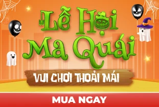
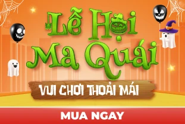

MBA Bằng Hình - The Usual MBA
Tác giả: Jason Barron ,MBA
Nhà xuất bản: Công Thương
154,980 đ
MBA Bằng Hình - The Usual MBA
Jason Barron, MBA, là một nhà lãnh đạo đầy sáng tạo tập trung vào chiến lược sản phẩm số và trải nghiệm người dùng. Ông cũng là đồng sự sáng lập nên công ty khởi nghiệp LowestMed, vốn được RetailMeNot thâu tóm vào năm 2018, và hiện nay đang làm quản lý cấp cao cho một tổ chức phi lợi nhuận lớn chuyên về các sản phẩm số cung cấp cho hàng triệu người dùng trên khắp thế giới.
Ông nhận bằng cử nhân từ Đại học Southern Virginia năm 2007 và bằng Thạc sĩ Quản trị Kinh doanh từ Đại học Brigham Young vào năm 2017.
Hiện tại Jason đang sống gần Salt Lake City, Utah, với vợ và năm người con. Tìm hiểu thêm ...


 
